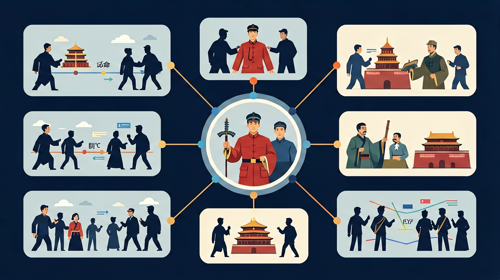

中国近代史始于1840年鸦片战争，止于1949年中华人民共和国成立，重点叙述近代以来中国人民为争取民族独立、人民解放和实现国家富强、人民幸福而不懈奋斗的历程。

🎯 能说出改革与革命的3个本质区别
🎯 能判断历史事件的改革/革命属性并说明理由
🎯 能分析特定改革失败的经济根源
❓ 为啥戊戌变法失败了但明治维新却成功了？
❓ 辛亥革命到底算改革还是革命？
❓ 改革开放和古代变法有啥本质区别？
学完这一课，这些问题你都能自信地回答。
百日维新持续了多久？
下列哪项属于革命特征？
改革与革命是初中历史的重要内容。中国近代史始于1840年鸦片战争，止于1949年中华人民共和国成立，重点叙述近代以来中国人民为争取民族独立、人民解放和实现国家富强、人民幸福而不懈奋斗的历程。
通过了解林则徐虎门销烟、英法联军火烧圆明园、俄国割占中国北方大片领土等史事，认识列强侵华对中国社会的影响。
点击时代/图层按钮切换地图；悬停边界，点击城市标记查看说明。
把卡片拖到核心概念 / 方法技能 / 应用情境 / 常见误区。
拖完 4 项后自动判分。
近代中国面对危局，出现改革与革命两条道路：维新变法试图改良制度，辛亥革命则推翻帝制、建立共和。两者都是救亡探索，条件不同、方式不同、结果与影响也不同。
比较题用同一表格：领导力量、主张、手段、结局、影响。避免简单说谁绝对正确。
常见误区：常见误区是把改革与革命完全对立，忽视它们都是近代探索的组成部分。
辛亥革命相对戊戌变法，更突出的变化是？
And：学生知道商鞅变法、戊戌变法等名词
But：但说不清改革成功的关键因素
Therefore：通过案例对比理解改革条件
改革成功需要三大条件：①统治者强力支持（如商鞅变法时秦孝公‘徙木立信’）②符合民众需求（北魏孝文帝改革中‘均田制’让农民有地种）③循序渐进（王安石变法‘青苗法’分阶段试点）。比如1868年日本明治维新，天皇联合武士阶层，10年内颁布200多条法令，最终使工业产值增长3倍。
🌍 就像班级换新班规，如果班主任支持、同学们觉得公平、先试用再推广，就更容易落地。去年学校食堂改革，分阶段调整菜单，现在剩饭量减少40%就是例子。
下列哪项是明治维新成功的直接原因？
And：学生了解法国大革命等事件
But：难理解为何有时必须革命
Therefore：通过数据量化革命临界点
革命往往在三个条件叠加时爆发：①经济崩溃（如法国大革命前面包价格涨到工人日薪的80%）②阶层固化（俄国十月革命前贵族占1%人口却拥有90%土地）③改革失败（中国辛亥革命前‘皇族内阁’让立宪派绝望）。以1917年俄国为例，战争导致粮食减产50%，工人日工作14小时，最终引发二月革命。
🌍 就像气球不断充气，压力超过临界点就会爆炸。上学期隔壁班因班费不透明、班委世袭、投诉无果，最终全班联名要求改选。
1917年俄国革命爆发的直接诱因是？
用表格对比洋务运动与明治维新的措施差异
从生产力角度分析商鞅变法成功原因
对比辛亥革命与英国光荣革命的暴力程度
展示改革开放前后深圳对比照片
用改革要素分析班级管理制度改进
迁移任务：找一道与「改革与革命」相关的练习题或生活情境，用本课方法完整解答一遍。
复制提示词到 AI 学伴，生成「改革与革命」的时间轴或事件提纲；也可以上传你手绘的示意图，请 AI 学伴点评。
复制后可粘贴到 AI 学伴继续对话。
关于社会变革方式，正确的是：
分析明治维新与洋务运动的异同
先独立作答，再点选项查看对错与错因。
下列哪项最能体现'改革'与'革命'的根本区别？
对比明治维新与辛亥革命，以下说法正确的是：
某历史学者说：'改革是给旧房子装修，革命是推倒重建'。这个比喻说明：
戊戌变法仅持续103天就失败，说明改革成功需要____的支持。
答案：统治集团
缺乏实权派支持是改良运动失败关键
法国大革命期间颁布的《____宣言》体现了革命的根本目标是建立新制度。
答案：人权
该文件奠定了现代政治制度基础
（中考真题）明治维新与戊戌变法根本不同在于？
若用改革要素分析垃圾分类政策，最应关注？
大化改新与孝文帝改革的共同点是？
✅ 变法是在原有制度框架内调整
💡 混淆暴力手段与制度更替
✅ 需结合当时生产力水平判断
💡 线性进步史观影响
口诀：改革温和调制度，革命暴力换新天
类比：改革像装修房子，革命像推倒重建